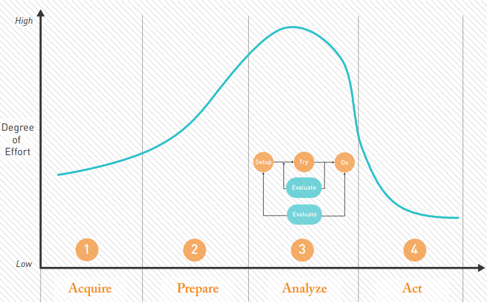

The WHY
Instructors: Jhun Brian M. Andam | Timothy Jonah E. Borromeo
Course: Introduction to Data Science
Objectives
- Understand the need and importance of Data Science in different aspects of society.
- Acquire foundational knowledge on how data science affects businesses and industries.
- Understand the need to have a data strategy in data science endeavors.
Why Data Science Matters?
Our world is now measured, mapped, and recorded in digital bits. [1]
Data science enables individuals, businesses, and organizations to make informed decisions based on data rather than intuition. By leveraging data science techniques—such as machine learning, predictive analytics, and data visualization—organizations can uncover hidden patterns, optimize processes, and drive innovation. Businesses use data science to improve customer experiences, detect fraud, and personalize recommendations, while industries like healthcare and agriculture rely on it for disease prediction and resource optimization. Moreover, governments and policymakers use data science to analyze trends, improve public services, and respond effectively to crises. Without data science, valuable insights would remain buried in raw data, limiting progress and efficiency across all sectors of society.
<img src="https://www.mdpi.com/applsci/applsci-13-09158/article_deploy/html/images/applsci-13-09158-g006.png" alt="Image 1" style="width: 333px; height: auto;">
<img src="https://production-media.paperswithcode.com/tasks/Screenshot_2019-11-28_at_18.23.25_XBt0d7z.png" alt="Image 2" style="width: 333px; height: auto;">
<img src="https://cdnintech.com/media/chapter/82490/1512345123/media/F4.png" alt="Image 2" style="width: 333px; height: auto;">Applications of Data Science
Healthcare
In 2008, Google staffers created Google Flu Trends, a tool that mapped flu outbreaks in real time by tracking location data on flu-related searches. But it didn’t work. In 2013, Google estimated about twice the flu cases that were actually observed (the Flu Trends algorithm relied too much on correlations between search term volume and flu cases). Even so, it demonstrated the potential and importance of data science in healthcare.
Transportation and Logistics
While both biking and public transit can curb driving-related emissions, data science can do the same by optimizing road routes. And though data-driven route adjustments are often small, they can help save thousands of gallons of gas when spread across hundreds of trips and vehicles.
Sports
In the early 2000s, the Oakland Athletics’ recruitment budget was so small the team couldn’t recruit quality players. So the general manager redefined quality, using in-game statistics other teams ignored to predict player potential, assemble a strong team and make the playoffs despite the team’s budget.
Author Michael Lewis wrote a book about the phenomenon, Moneyball. Since then, the global market for sports analytics has thrived and is expected to reach 8.4 billion by 2026.
Government
U.S. government agencies can access heaps of data. Not only do they maintain their own databases of ID photos, fingerprints and phone activity, but government agents can also get warrants to obtain data from any American data warehouse.
Gaming
Data science and AI have been used in video games for decades. You see it in Pac-Man, where they were used in the game’s mazes and to give the ghosts distinct personalities. The video game industry continues to find creative ways to implement data science and AI to improve game play and entertain millions of people across the globe, swelling to over $244 billion in 2024.
E-Commerce
Online retailers often automatically tailor their web storefronts based on viewers’ data profiles. That can mean tweaking page layouts and customizing spotlighted products, among other things. Some stores may also adjust prices based on what consumers seem able to pay, a practice called personalized pricing. Even websites that sell nothing feature targeted ads.
Fintech
Fintech and data science go hand in hand, as financial companies typically use insights drawn from raw data to make lending decisions and create credit reports. Data science is also used to predict consumer behavior, run risk evaluations and optimize financial portfolios and assets.
Laboratory Activity
Case Reading: Reshaping Business With Artificial Intelligence (AI at Work)
- Why do you think traditional root-cause analysis was less efficient compared to AI?
- How does AI’s ability to detect patterns and learn from data improve decision-making in a manufacturing environment?
- What industries beyond aerospace could benefit from AI-powered disruption management? Can you give an example?
- The excerpt mentions that many companies have yet to get started with AI. What do you think are the main barriers preventing businesses from adopting AI?
- What ethical concerns might arise when using AI in critical business operations like manufacturing?
- Do you think AI will eventually replace human decision-makers in business processes? Why or why not?
How does Data Science Really Work?

**
Acquire
This activity focuses on obtaining the data you need. Given the nature of data, the details of this activity depend heavily on who you are and what you do. As a result, we will not spend a lot of time on this activity other than to emphasize its importance and to encourage an expansive view on which data can and should be used.
Prepare
Great outcomes don’t just happen by themselves. A lot depends on preparation, and in Data Science, that means manipulating the data to fit your analytic needs. This stage can consume a great deal of time, but it is an excellent investment. The benefits are immediate and long term.
Analyze
This is the activity that consumes the lion’s share of the team’s attention. It is also the most challenging and exciting (you will see a lot of ‘aha moments’ occur in this space). As the most challenging and vexing of the four activities, this field guide focuses on helping you do this better and faster.
Act
Every effective Data Science team analyzes its data with a purpose–that is, to turn data into actions. Actionable and impactful insights are the holy grail of Data Science. Converting insights into action can be a politically charged activity, however. This activity depends heavily on the culture and character of your organization, so we will leave you to figure out those details for yourself
Group Activity
Case Study: The Role of Data Science in X-Event
Students will identify a real-world issue in their local community, school, or city where data science could provide solutions. They will analyze the problem, explore what types of data might be useful, and propose how data science could improve the situation.
Instructions:
1. Identify a Community Issue
Choose a real-world problem in your local community, school, or city where data science could provide solutions. Examples include:
- Traffic & Transportation: Can data science help optimize traffic flow or improve public transport schedules?
- Waste Management: Could data-driven solutions improve garbage collection efficiency?
- Public Safety: How can crime or accident data be used to make the community safer?
- Education: Can predictive analytics help identify students at risk of dropping out?
- Healthcare: How can data science assist in tracking disease outbreaks or improving hospital resource allocation?
- Environment: How can data science help monitor pollution, flooding, or natural disasters?
2. Research Similar Problems & Solutions
- Investigate how prevalent the problem is in your community. Provide background information.
- Use figures or statistics to highlight the impact of the issue.
- Find at least one article, research paper, or case study discussing a similar problem.
- Summarize the research findings: - What problem did they address?
- What solution did they propose?
- Did they use data science? If so, how?
- What was the outcome?
3. Analyze How Data Science Can Help in Your Community
- Propose solutions for your local context. - You can derive ideas from the research you found or suggest new approaches.
- Explain how data science techniques (e.g., machine learning, data visualization, predictive analytics) could improve the situation.
4. Include References
- Provide links or citations for the articles, research papers, or case studies you used.
5. Present Your Case Study
- Prepare a PowerPoint presentation (maximum of 10 slides). - Keep text minimal—focus on key points and visuals. - Use graphs, images, or charts to support your findings. - Be ready to present next week.
Case Study Evaluation Criteria (Total: 50 points)
| Criteria | Excellent (10 pts) | Good (8 pts) | Satisfactory (6 pts) | Needs Improvement (4 pts or below) | Points Earned |
|---|---|---|---|---|---|
| Problem Identification (10 pts) | Clearly defines a relevant community issue with strong background and significance. | Identifies a problem with some background information but lacks depth. | States a problem but lacks explanation of its relevance. | Problem is unclear or not well-explained. | /10 |
| Research & Use of References (10 pts) | Cites multiple relevant sources, effectively summarizes findings, and includes supporting data/figures. | Uses at least one source but lacks depth or supporting data. | Research is minimal or lacks a clear connection to the problem. | Little to no research cited, or sources are unreliable. | /10 |
| Application of Data Science (10 pts) | Clearly explains how data science can be applied, referencing real-world examples and techniques. | Provides a good explanation of data science applications, but lacks specific techniques. | Mentions data science but lacks clarity on how it applies to the problem. | Data science connection is unclear or missing. | /10 |
| Presentation Quality (10 pts) | Engaging, well-structured slides with minimal text, clear visuals, and smooth delivery. | Well-structured presentation but contains too much text or lacks visuals. | Presentation is somewhat disorganized, with excessive text or unclear visuals. | Slides are cluttered, text-heavy, or presentation lacks coherence. | /10 |
| Clarity & Critical Thinking (10 pts) | Demonstrates strong analytical skills, anticipates challenges, and proposes well-thought-out solutions. | Shows good understanding but lacks deeper critical analysis. | Some ideas are present but not fully developed. | Lacks clear problem-solving or critical thinking. | /10 |
Final Score: **__/50**
Peer-to-Peer Evaluation Form
Instructions: Rate each of your group members (excluding yourself) based on their contributions to the case study. Use the following scale:
- 10 = Outstanding
- 8 = Good
- 6 = Satisfactory
- 4 or below = Needs Improvement
| Criteria | Description | Score (1-10) |
|---|---|---|
| Contribution to Research (10 pts) | Helped find relevant sources, analyzed information, and provided insights. | /10 |
| Effort & Participation (10 pts) | Actively contributed ideas, attended meetings, and completed assigned tasks. | /10 |
| Teamwork & Collaboration (10 pts) | Worked well with others, communicated effectively, and supported the team. | /10 |
| Quality of Work (10 pts) | Provided high-quality inputs, whether in writing, analysis, or presentation. | /10 |
| Reliability & Responsibility (10 pts) | Met deadlines, stayed committed to the project, and took ownership of tasks. | /10 |
Total Score for [Member’s Name]: **__/50**
\[\begin{equation} \text{Individual Score} = (0.7 \times \text{Group Score}) + (0.3 \times \text{Individual Rating}) \end{equation}\]
References:
- https://argos.vu/wp-content/uploads/2016/06/2015-field-guide-to-data-science-160211215115.pdf
- https://builtin.com/data-science/data-science-applications-examples
Social Platform
The rise of social networks has completely altered how people socialize, with online data helping shape how relationships begin and develop in the digital age. Here are some examples of data science fostering human connection.